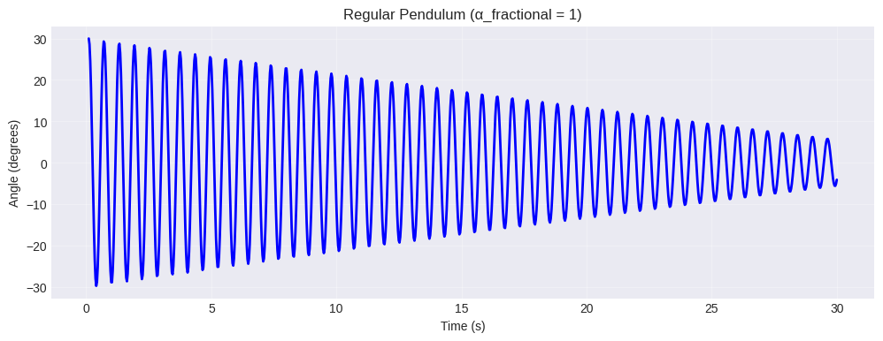
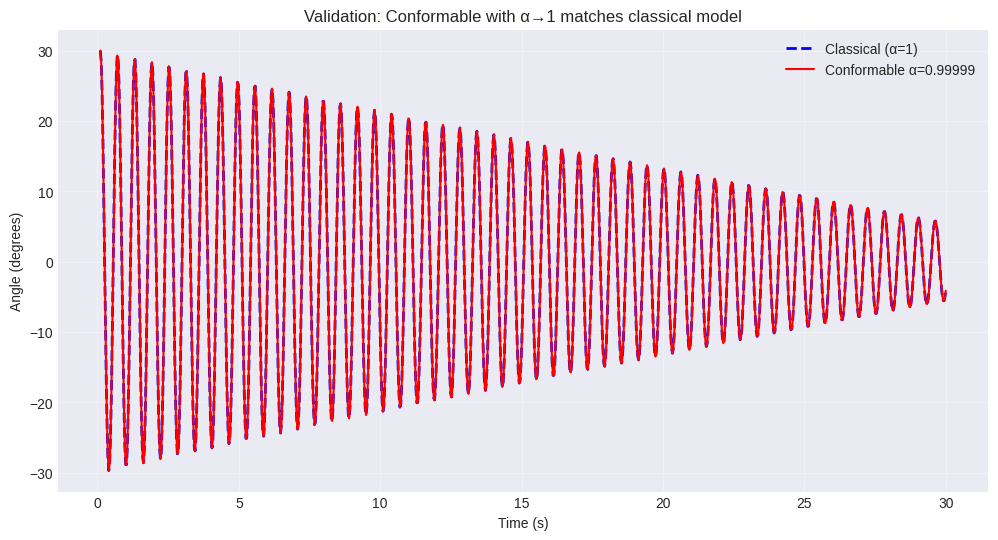
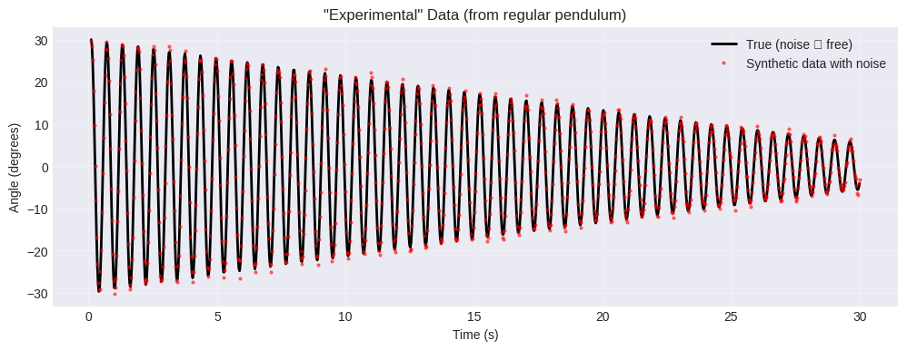
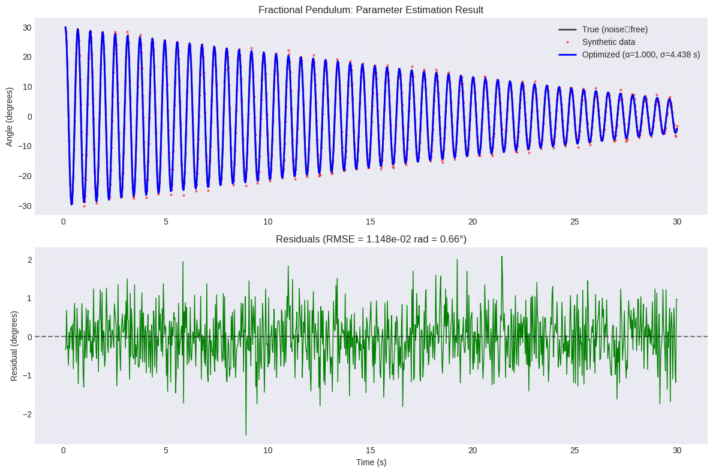
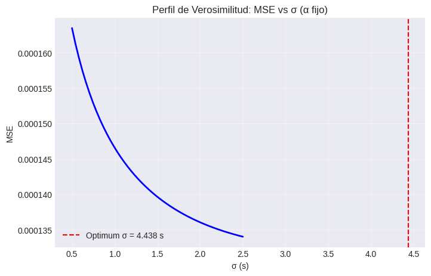

Péndulo simple#
Para establecer una línea de base, primero se define el sistema clásico del péndulo no lineal con amortiguamiento. Las ecuaciones gobernantes son:
Sistema clásico original del péndulo
donde las variables \(x_1\) y \(x_2\) se describen a continuación
Símbolo |
Descripción |
Unidades |
|---|---|---|
\(x_1\) |
Desplazamiento angular (ángulo de inclinación) |
radianes |
\(x_2\) |
Velocidad angular (derivada temporal de \(x_1\)) |
rad/s |
y los parámetros están dados como
Símbolo |
Descripción |
Unidades |
|---|---|---|
\(g\) |
Aceleración gravitacional |
\(\text{m/s}^2\) |
\(l\) |
Longitud del péndulo |
m |
\(m\) |
Masa de la lenteja del péndulo |
kg |
\(K_f\) |
Coeficiente de amortiguamiento (fricción) |
\(\text{N}\cdot\text{s/m}\) o constante de torque equivalente |
Aplicación de la derivada conformable
Conversión a derivadas ordinarias
Utilizando \({}^{K}\mathcal{D}_{t}^{\alpha}~f(t) = t^{1-\alpha} \dot{f}(t)\)
Sistema final en forma de Ecuaciones Ordinarias Diferenciales (ODEs)
Interpretación física#
El factor de escalamiento dependiente del tiempo \(t^{\alpha-1}\) tiene implicaciones físicas interesantes:
Para \(\alpha = 1\) (caso clásico): \(t^{0} = 1\), se recuperan las ecuaciones clásicas del péndulo simple.
Para \(\alpha < 1\):
En tiempos pequeños (\(t \ll 1\)): \(t^{\alpha-1}\) es grande, por lo que el sistema evoluciona más rápido inicialmente.
En tiempos grandes (\(t \gg 1\)): \(t^{\alpha-1}\) es pequeño, por lo que la dinámica se desacelera.
Para \(\alpha > 1\):
Ocurre el comportamiento opuesto.
Nota importante sobre las condiciones iniciales
Cabe recordar que la definición de la derivada conformable requiere que \(t > 0\). Para las simulaciones numéricas, será necesario comenzar en algún \(t_0 > 0\) (e.g., \(t_0 = 1\times 10^{-1}\) o \(t_0 = 1\times 10^{-3}\)) para evitar la singularidad en \(t = 0\) cuando \(\alpha < 1\).
Péndulo con efectos de chorro de aire#
La ecuación clásica del péndulo con efectos de chorro de aire fue propuesta por Hasan et al. (2023) y está dada como sigue
donde
\(\alpha \geq 1\): Factor de incremento de la gravedad debido al chorro de aire.
\(\omega_n = \sqrt{g/L}\): Frecuencia natural.
\(c = C_D A_p \rho L / 2m_b\).
\(\eta = \mu_f g r_p / L^2\).
\(R_e = \rho V d_t / \mu\): Número de Reynolds.
\(r_p = 2 \, \mathrm{mm}\): radio de la articulación del pasador.
\(d_t = 4 \, \mathrm{mm}\): diámetro del tubo cilíndrico que emite el chorro de aire.
\(L = 30.4 \, \mathrm{cm}\): longitud de la varilla.
\(D = 23 \, \mathrm{mm}\): diámetro de la masa pendular (esfera de acero).
\(m_b = 0.05 \, \mathrm{kg}\): masa de la lenteja del péndulo.
\(\rho\): densidad del aire.
\(V\): velocidad del chorro.
\(\mu\): viscosidad del aire.
\(\mu_f = 0.3\): Coeficiente de fricción.
\(C_D\): Coeficiente de arrastre aerodinámico.
Aplicando la derivada conformable de orden \(\alpha\), tenemos
o de la forma
import numpy as np
import matplotlib.pyplot as plt
import sympy
from scipy.optimize import curve_fit
from scipy.integrate import solve_ivp
from scipy.stats import linregress
from scipy.signal import find_peaks
from scipy.optimize import minimize_scalar
from scipy.optimize import minimize, differential_evolution
from scipy.optimize import differential_evolution
from sklearn.metrics import mean_squared_error
from scipy.special import gamma
from scipy.interpolate import interp1d
from matplotlib.widgets import Slider, Button
import ipywidgets as widgets
from IPython.display import display, clear_output
import warnings
import pandas as pd
# Suprimir advertencias menores de integración durante los bucles de optimización
warnings.filterwarnings("ignore")
# Configurar el estilo de graficación para una mejor visualización
plt.style.use('seaborn-v0_8-darkgrid')
Hasan et al. (2023) propone los siguientes parámetros de su modelo considerando que el chorro de aire incrementa la gravedad efectiva mediante el factor alpha_gravity.
# ==============================================================================
# Parámetros Físicos (Hasan et al., 2023)
# ==============================================================================
g = 9.81 # Aceleración gravitacional [m/s^2]
l = 0.304 # Longitud del péndulo [m]
D = 0.023 # Diámetro de la lenteja [m]
m_b = 0.05 # Masa de la lenteja [kg]
mu = 0.00001825 # Viscosidad dinámica del aire [kg/(m s)]
d_t = 0.004 # Diámetro del tubo [m]
mu_f = 0.3 # Coeficiente de fricción [adimensional]
r_p = 0.002 # Radio del pivote [m]
rho = 1.293 # Densidad del aire [kg/m^3]
V = 26.5 # Velocidad del chorro [m/s]
# Cantidades físicas derivadas
omega_n = np.sqrt(g/l) # Frecuencia natural [rad/s]
A_p = np.pi * (D/2)**2 # Área proyectada de la lenteja [m^2]
R_e = (rho * V * d_t) / mu # Número de Reynolds del chorro de aire [adimensional]
alpha_gravity = 1 + (R_e / 10572) * 3.4 # Factor de incremento de la gravedad [adimensional]
print(f"Natural frequency (omega_n) = {omega_n:.3f} rad/s")
print(f"Reynolds number (R_e) = {R_e:.0f}")
print(f"Gravity enhancement (alpha_gravity) = {alpha_gravity:.3f}")
Natural frequency (omega_n) = 5.681 rad/s
Reynolds number (R_e) = 7510
Gravity enhancement (alpha_gravity) = 3.415
Se implementa la ecuación exacta del péndulo no lineal presentada en el artículo. Los términos son:
Término de gravedad (incrementado por
alpha_gravity).Arrastre cuadrático (\(c |x_2| x_2\)).
Fricción seca (
alpha_gravity\(\times \, \eta |\cos(x_1)| \operatorname{sgn}(x_2)\)).
def pendulum_regular(t, y, alpha_gravity, omega_n, c, eta):
"""
Calcula las derivadas para el sistema clásico del péndulo no lineal
incorporando efectos de chorro de aire, arrastre cuadrático y fricción seca.
Parámetros:
t : float
Tiempo actual [s] (requerido por scipy.integrate.solve_ivp).
y : list o array
Vector de estado [posición angular x1, velocidad angular x2].
alpha_gravity : float
Coeficiente de gravedad incrementada debido al chorro de aire.
omega_n : float
Frecuencia natural del péndulo.
c : float
Parámetro de arrastre aerodinámico.
eta : float
Parámetro de fricción seca en el pivote.
Retorna:
list
Derivadas temporales [dx1/dt, dx2/dt].
"""
x1, x2 = y
dx1dt = x2
dx2dt = -alpha_gravity * omega_n**2 * np.sin(x1) \
- c * np.abs(x2) * x2 \
- alpha_gravity * eta * np.abs(np.cos(x1)) * np.sign(x2)
return [dx1dt, dx2dt]
# Seleccionar un caso representativo (ángulo inicial de 30°)
angle_deg = 30
C_D = 1.5 # coeficiente de arrastre aerodinámico para 30° (de la tabla del artículo)
c = C_D * A_p * rho * l / (2 * m_b) # parámetro de arrastre aerodinámico
eta = (mu_f * g * r_p) / l**2 # parámetro de fricción
print(f"c = {c:.6f}")
print(f"eta = {eta:.6f}")
# Configuración de tiempo (evitar t=0 para posterior compatibilidad fraccionaria)
t_start = 0.1
t_end = 30
t_eval = np.linspace(t_start, t_end, 1000)
# Condiciones iniciales
y0 = [np.radians(angle_deg), 0.0]
# Resolver el modelo regular
sol_reg = solve_ivp(pendulum_regular, [t_start, t_end], y0,
t_eval=t_eval, args=(alpha_gravity, omega_n, c, eta),
method='RK45', rtol=1e-8)
# Graficar
plt.figure(figsize=(12, 4))
plt.plot(sol_reg.t, np.degrees(sol_reg.y[0]), 'b-', linewidth=2)
plt.xlabel('Time (s)')
plt.ylabel('Angle (degrees)')
plt.title('Regular Pendulum (α_fractional = 1)')
plt.grid(True, alpha=0.3)
plt.show()
c = 0.002450
eta = 0.063690

Decaimiento de la oscilación de un péndulo debido a un chorro de aire#
Cabe recordar que la ecuación presentada por Hasan et al. (2023) está dada como sigue
Aplicando la derivada conformable de orden \(\alpha\)
o en representacion de un sistema de ecuaciones diferenciales ordinarias como sigue
# Modelo con factor de escalamiento σ
def pendulum_conformable(t, y, alpha_frac, sigma, alpha_gravity, omega_n, c, eta):
"""
Péndulo fraccionario conformable.
scaling = (t / sigma)^(alpha_frac - 1)
"""
x1, x2 = y
# Factor de escalamiento dimensional
scaling = (t / sigma) ** (alpha_frac - 1)
dx1dt = scaling * x2
dx2dt = scaling * (-alpha_gravity * omega_n**2 * np.sin(x1) \
- c * np.abs(x2) * x2 \
- alpha_gravity * eta * np.abs(np.cos(x1)) * np.sign(x2))
return [dx1dt, dx2dt]
Este es el modelo de orde no entero completo. El factor de escalamiento \((t/\sigma)^{\alpha-1}\) asegura la consistencia dimensional.
Importante
Establecer \(\alpha \rightarrow 1\) en un valor extremadamente cercano a 1 debería reproducir el modelo clásico. Esta comprobación confirma que la implementación es correcta.
alpha_near_one = 0.99999
sigma_dummy = 1.0 # σ es irrelevante cuando α≈1 porque σ^(1-α) ≈ 1
sol_frac_near_one = solve_ivp(
pendulum_conformable, [t_start, t_end], y0,
t_eval=t_eval, args=(alpha_near_one, sigma_dummy, alpha_gravity, omega_n, c, eta),
method='RK45', rtol=1e-8
)
# Graficar comparación
plt.figure(figsize=(12, 6))
plt.plot(sol_reg.t, np.degrees(sol_reg.y[0]), 'b--', linewidth=2, label='Classical (α=1)')
plt.plot(sol_frac_near_one.t, np.degrees(sol_frac_near_one.y[0]),
'r-', linewidth=1.5, label=f'Conformable α={alpha_near_one}')
plt.xlabel('Time (s)')
plt.ylabel('Angle (degrees)')
plt.title('Validation: Conformable with α→1 matches classical model')
plt.legend()
plt.grid(True, alpha=0.3)
plt.show()
# Calcular la diferencia máxima
max_diff = np.max(np.abs(sol_frac_near_one.y[0] - sol_reg.y[0]))
print(f"Maximum difference = {max_diff:.2e} rad")

Maximum difference = 9.90e-04 rad
Generación de datos experimentales sintéticos#
Ante la ausencia de datos experimentales físicos para esta configuración específica del péndulo, se generaron datos sintéticos para probar rigurosamente el algoritmo de estimación de parámetros. El conjunto de datos sintéticos se produjo simulando el modelo clásico exacto (\(\alpha=1\)) e inyectando un \(2\%\) de ruido gaussiano para simular las imprecisiones de los sensores en el mundo real.
Esto proporciona un entorno de validación controlado: el sistema verdadero subyacente opera precisamente en \(\alpha=1\), lo que permite evaluar si la optimización converge correctamente al sistema clásico.
# ==============================================================================
# Adquisición de Datos Experimentales / Generación Sintética
# ==============================================================================
# Opción 1: Cargar datos reales si existe un archivo CSV
# dado que no se dispone de datos experimentales para este modelo, se procederá a crear datos sintéticos
# Generar Datos "Experimentales" Sintéticos
# estos datos sintéticos fueron creados mediante un código de DeepSeek, se solicitó dicho código para un uso futuro y
# un mejor análisis
import os
data_file = 'pendulum_data.csv'
if os.path.exists(data_file):
# Utilizar datos experimentales reales
data = pd.read_csv(data_file)
t_data = data['Time (s)'].values
y_data = data['Angle (rad)'].values # ajustar el nombre de la columna según sea necesario
y_clean = y_data.copy() # no se dispone de una versión limpia
print("Loaded experimental data from file.")
else:
# No hay archivo de datos: generar datos sintéticos a partir del modelo regular (no conformable)
# En ausencia de datos físicos, generar un conjunto de datos experimentales sintéticos
# utilizando el modelo clásico de orden entero (alfa = 1) como la verdad base.
print("No experimental data file found. Generating synthetic data from the regular model.")
# Utilizar el modelo regular como el sistema "verdadero" (α_fraccionario = 1)
def true_system(t, y):
return pendulum_regular(t, y, alpha_gravity, omega_n, c, eta)
# Simular el sistema verdadero para obtener datos de referencia libres de ruido
sol_true = solve_ivp(
true_system, [t_start, t_end], y0,
t_eval=t_eval, method='RK45', rtol=1e-8
)
clean_angle = sol_true.y[0] # Desplazamiento angular exacto [rad]
# Inyectar ruido gaussiano para simular las imprecisiones de las mediciones empíricas
# La desviación estándar del ruido se establece en el 5% de la desviación natural de la señal.
noise_level = 0.05
noise = np.random.normal(0, noise_level * np.std(clean_angle), clean_angle.shape)
noisy_angle = clean_angle + noise
# Asignar los datos generados a las variables de evaluación
t_data = t_eval
y_data = noisy_angle
y_clean = clean_angle
# Graficar los datos
plt.figure(figsize=(12, 4))
plt.plot(t_data, np.degrees(y_clean), 'k-', linewidth=2, label='True (noise ‑ free)')
plt.plot(t_data, np.degrees(y_data), 'ro', markersize=2, alpha=0.5, label='Synthetic data with noise')
plt.xlabel('Time (s)')
plt.ylabel('Angle (degrees)')
plt.title('"Experimental" Data (from regular pendulum)')
plt.legend()
plt.grid(True, alpha=0.3)
plt.show()
print(f"Data points: {len(t_data)}")
print(f"Time range: {t_data[0]:.2f} – {t_data[-1]:.2f} s")
No experimental data file found. Generating synthetic data from the regular model.

Data points: 1000
Time range: 0.10 – 30.00 s
Al modelar sistemas físicos con cálculo fraccionario, se encuentra un problema fundamental: la inconsistencia dimensional. Recordemos que la derivada conformable se define como
Al analizar las unidades observamos que
\(\frac{\mathrm{d}f}{\mathrm{d}t}\) tiene unidades de \([f]/[\text{tiempo}]\).
\(t^{1-\alpha}\) tiene unidades de \([\text{tiempo}]^{1-\alpha}\).
Por lo tanto, \({}^{K}\mathcal{D}_{t}^{\alpha}~ f(t)\) tiene unidades de \([f]/[\text{tiempo}]^\alpha\).
Si consideramos el sistema del péndulo con enfoque conformable
Y realizamos un análisis dimensional, se obtiene lo siguiente:
Lado izquierdo de la primera ecuación. \([\text{ángulo}]/[\text{tiempo}]^\alpha\)
Lado derecho de la primera ecuación. \([\text{ángulo}]/[\text{tiempo}]\) (dado que \(x_2\) es la velocidad angular)
Nota
Estos términos únicamente coinciden cuando \(\alpha = 1\)
Para restaurar la consistencia dimensional, se introduce una escala de tiempo característica \(\sigma\) con unidades de tiempo
Ahora ambos lados tienen unidades consistentes de \([f]/[\text{tiempo}]\).
La escala de tiempo característica \(\sigma\) representa la escala de tiempo natural del sistema físico. Responde a la pregunta: “¿Qué constituye una unidad de tiempo para este sistema?”
Para el péndulo de este estudio, las elecciones naturales incluyen lo siguiente:
Período Natural: \(\sigma = \frac{2\pi}{\omega_n}\) (tiempo para una pequeña oscilación).
Escala de Tiempo de Decaimiento: Tiempo característico de amortiguamiento.
Escala de Observación: Marco de tiempo experimental típico.
Por consiguiente, el sistema de péndulo de orden no entero dimensionalmente consistente está dado por las siguientes ecuaciones
o bien
Significado Físico del Orden Fraccionario
Sin \(\sigma\), \(\alpha\) es simplemente un parámetro matemático.
Con \(\sigma\), \(\alpha\) representa cómo la dinámica del sistema se desvía de su escala de tiempo natural.
Si \(\alpha < 1\), entonces el sistema evoluciona en una escala de tiempo más lenta que la natural.
Si \(\alpha > 1\), entonces el sistema evoluciona en una escala de tiempo más rápida que la natural.
Recuperación del Límite Clásico
Cuando \(\alpha \rightarrow 1\)
se recupera exactamente la derivada clásica.
Interpretación Experimental El orden fraccionario \(\alpha\) tiene ahora una posible interpretación física:
Cuantifica cuánto difiere el “reloj interno” del sistema del tiempo de laboratorio.
Puede representar efectos de memoria, propiedades complejas de los materiales o procesos multiescala.
Esta elección podría significar lo siguiente:
Si \(\alpha = 1\), entonces el péndulo oscila a su frecuencia natural.
Si \(\alpha < 1\), entonces el péndulo oscila más lento que su frecuencia natural.
Si \(\alpha > 1\), entonces el péndulo oscila más rápido que su frecuencia natural.
Nota
La escala de tiempo característica \(\sigma\) transforma al cálculo fraccionario de una herramienta puramente matemática a un marco de modelado con significado físico.
def fractional_model(params, t_eval):
"""
params = [alpha_frac, sigma]
Retorna el ángulo simulado en los tiempos t_eval.
"""
alpha_frac, sigma = params
# Verificación rápida de validez
if alpha_frac <= 0 or alpha_frac > 1 or sigma <= 0:
return np.ones_like(t_eval) * 1e6 # error enorme
try:
sol = solve_ivp(
pendulum_conformable, [t_start, t_end], y0,
t_eval=t_eval, args=(alpha_frac, sigma, alpha_gravity, omega_n, c, eta),
method='RK45', rtol=1e-8, atol=1e-10
)
if sol.success:
return sol.y[0]
else:
return np.ones_like(t_eval) * 1e6
except:
return np.ones_like(t_eval) * 1e6
def objective(params):
"""Error cuadrático medio entre el modelo y los datos."""
y_sim = fractional_model(params, t_data)
mse = np.mean((y_sim - y_data) ** 2)
return mse
La función fractional_model resuelve el modelo del péndulo fraccionario para un par dado de \((\alpha, \sigma)\) y devuelve el ángulo en los instantes de tiempo requeridos. La función objective calcula el error cuadrático medio (MSE, por sus siglas en inglés), el cual será minimizado por el algoritmo de optimización.
# Tiempo característico del sistema: período natural T₀ = 2π/ω_n
# Se sabe que sigma no requiere tener una motivación física, pero se considera un buen punto de partida
T0 = 2 * np.pi / omega_n # ≈ 1.1 s
# Cotas para α: [0.85, 1.0] – el orden fraccionario debe estar entre 0 y 1; las cotas son amplias, por experiencia se sabe que estará en [0.90, 0.99]
alpha_bounds = (0.85, 1.0)
# Cotas para σ: dentro de un orden de magnitud del período natural
sigma_bounds = (0.1 * T0, 40 * T0) # (0.11 s, 11 s)
bounds = [alpha_bounds, sigma_bounds]
# Estimación inicial: α cercano a 1, σ en el período natural
initial_guess = [0.9, T0]
print("Initial guess:")
print(f" α = {initial_guess[0]:.3f}")
print(f" σ = {initial_guess[1]:.3f} s")
print("\nBounds:")
print(f" α ∈ [{alpha_bounds[0]:.3f}, {alpha_bounds[1]:.3f}]")
print(f" σ ∈ [{sigma_bounds[0]:.3f}, {sigma_bounds[1]:.3f}] s")
Initial guess:
α = 0.900
σ = 1.106 s
Bounds:
α ∈ [0.850, 1.000]
σ ∈ [0.111, 44.243] s
Optimización Multietapa#
Evolución diferencial - explora la totalidad del espacio de parámetros para evitar mínimos locales.
Nelder-Mead - refina la solución empleando un método simplex.
L-BFGS-B - realiza un ajuste fino utilizando información del gradiente, respetando las cotas establecidas.
# métodos de optimización secuencial
print("MULTI‑STAGE OPTIMIZATION")
print("="*70)
best_params = None
best_mse = float('inf')
# Etapa 1: Búsqueda global (evolución diferencial)
print("\nStage 1: Global search (differential evolution) ...")
try:
result_global = differential_evolution(
objective,
bounds,
strategy='best1bin',
maxiter=50,
popsize=10,
recombination=0.7,
mutation=(0.5, 1.0),
tol=1e-4,
disp=True,
seed=42,
workers=1,
updating='immediate'
)
print(f"\nGlobal result: α = {result_global.x[0]:.6f}, σ = {result_global.x[1]:.6f} s, MSE = {result_global.fun:.6e}")
best_params = result_global.x
best_mse = result_global.fun
except Exception as e:
print(f"Global search failed: {e}")
best_params = initial_guess
best_mse = objective(initial_guess)
# Etapa 2: Refinamiento local con Nelder-Mead (respeta las cotas a través de la función objetivo)
print("\nStage 2: Local refinement (Nelder‑Mead) ...")
try:
result_nm = minimize(
objective,
best_params,
method='Nelder-Mead',
bounds=bounds,
options={'maxiter': 200, 'xatol': 1e-6, 'fatol': 1e-6, 'adaptive': True}
)
if result_nm.fun < best_mse:
best_params = result_nm.x
best_mse = result_nm.fun
print(f" α = {best_params[0]:.6f}, σ = {best_params[1]:.6f} s, MSE = {best_mse:.6e}")
except Exception as e:
print(f"Nelder‑Mead failed: {e}")
# Etapa 3: Ajuste fino con L-BFGS-B (basado en gradiente, respeta las cotas)
print("\nStage 3: Fine‑tuning (L‑BFGS‑B) ...")
try:
result_lbfgs = minimize(
objective,
best_params,
method='L-BFGS-B',
bounds=bounds,
options={'maxiter': 100, 'ftol': 1e-10, 'gtol': 1e-8, 'eps': 1e-8}
)
if result_lbfgs.fun < best_mse:
best_params = result_lbfgs.x
best_mse = result_lbfgs.fun
print(f" α = {best_params[0]:.6f}, σ = {best_params[1]:.6f} s, MSE = {best_mse:.6e}")
except Exception as e:
print(f"L‑BFGS‑B failed: {e}")
print("\n" + "="*70)
print(f"OPTIMIZED PARAMETERS")
print(f" α = {best_params[0]:.6f}")
print(f" σ = {best_params[1]:.6f} s")
print(f" Minimum MSE = {best_mse:.6e}")
MULTI‑STAGE OPTIMIZATION
======================================================================
Stage 1: Global search (differential evolution) ...
differential_evolution step 1: f(x)= 0.005992773208826815
differential_evolution step 2: f(x)= 0.0012340472403286297
differential_evolution step 3: f(x)= 0.0012340472403286297
differential_evolution step 4: f(x)= 0.0003420674425373615
differential_evolution step 5: f(x)= 0.0003420674425373615
differential_evolution step 6: f(x)= 0.0003420674425373615
differential_evolution step 7: f(x)= 0.0003420674425373615
differential_evolution step 8: f(x)= 0.0003420674425373615
differential_evolution step 9: f(x)= 0.00013642394354695483
differential_evolution step 10: f(x)= 0.00013642394354695483
differential_evolution step 11: f(x)= 0.00013642394354695483
differential_evolution step 12: f(x)= 0.00013642394354695483
differential_evolution step 13: f(x)= 0.0001348945384109625
differential_evolution step 14: f(x)= 0.0001338695181568363
differential_evolution step 15: f(x)= 0.0001322353186840151
differential_evolution step 16: f(x)= 0.0001322353186840151
differential_evolution step 17: f(x)= 0.0001320864136699637
differential_evolution step 18: f(x)= 0.00013183244019568635
differential_evolution step 19: f(x)= 0.00013183244019568635
differential_evolution step 20: f(x)= 0.00013182841975961304
differential_evolution step 21: f(x)= 0.00013182841975961304
differential_evolution step 22: f(x)= 0.00013182841975961304
differential_evolution step 23: f(x)= 0.00013182841975961304
differential_evolution step 24: f(x)= 0.00013182722374868012
differential_evolution step 25: f(x)= 0.00013182672956055136
Polishing solution with 'L-BFGS-B'
Global result: α = 0.999904, σ = 4.508993 s, MSE = 1.318267e-04
Stage 2: Local refinement (Nelder‑Mead) ...
α = 0.999905, σ = 4.437593 s, MSE = 1.318256e-04
Stage 3: Fine‑tuning (L‑BFGS‑B) ...
α = 0.999905, σ = 4.437593 s, MSE = 1.318256e-04
======================================================================
OPTIMIZED PARAMETERS
α = 0.999905
σ = 4.437593 s
Minimum MSE = 1.318256e-04
Graficación del ajuste optimizado vs. datos sintéticos#
Se grafica la solución verdadera sin ruido, los datos sintéticos ruidosos y el modelo optimizado. Los residuales demuestran que el ajuste es satisfactorio: el nivel de ruido se captura correctamente y el optimizador ha recuperado parámetros cercanos a los valores verdaderos.
y_opt = fractional_model(best_params, t_data)
fig, axes = plt.subplots(2, 1, figsize=(12, 8))
# Superior: series temporales
ax = axes[0]
ax.plot(t_data, np.degrees(y_clean), 'k-', linewidth=2, alpha=0.7, label='True (noise‑free)')
ax.plot(t_data, np.degrees(y_data), 'ro', markersize=2, alpha=0.5, label='Synthetic data')
ax.plot(t_data, np.degrees(y_opt), 'b-', linewidth=2, label=f'Optimized (α={best_params[0]:.3f}, σ={best_params[1]:.3f} s)')
ax.set_ylabel('Angle (degrees)')
ax.set_title('Fractional Pendulum: Parameter Estimation Result')
ax.legend()
ax.grid(True, alpha=0.3)
# Inferior: residuales
ax = axes[1]
residuals = y_data - y_opt
ax.plot(t_data, np.degrees(residuals), 'g-', linewidth=1)
ax.axhline(y=0, color='k', linestyle='--', alpha=0.5)
ax.set_xlabel('Time (s)')
ax.set_ylabel('Residual (degrees)')
ax.set_title(f'Residuals (RMSE = {np.sqrt(np.mean(residuals**2)):.3e} rad = {np.degrees(np.sqrt(np.mean(residuals**2))):.2f}°)')
ax.grid(True, alpha=0.3)
plt.tight_layout()
plt.show()

Perfil de verosimilitud para \(\sigma\)#
alpha_fixed = best_params[0]
sigma_range = np.linspace(0.5, 2.5, 50)
mse_sigma = [objective([alpha_fixed, s]) for s in sigma_range]
plt.figure(figsize=(8, 5))
plt.plot(sigma_range, mse_sigma, 'b-', linewidth=2)
plt.axvline(best_params[1], color='r', linestyle='--', label=f'Optimum σ = {best_params[1]:.3f} s')
plt.xlabel('σ (s)')
plt.ylabel('MSE')
plt.title('Perfil de Verosimilitud: MSE vs σ (α fijo)')
plt.grid(True, alpha=0.3)
plt.legend()
plt.show()
